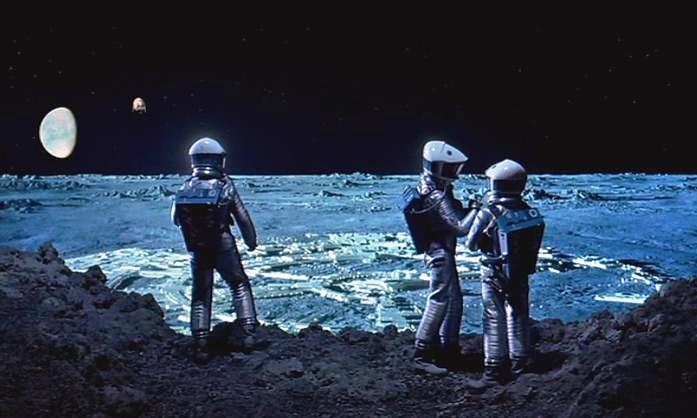

All you ever needed to know about moi...
I wasn't the happiest of children growing up. With hindsight, a lot of this is down to being undiagnosed as an individual who, though high functioning, was living on the autism spectrum.
For a lot of my youth, and intensely in my teenage years, I felt very different and very alone. This itself is a common human experience. But like many on the spectrum, I found solace in mathematics and science and engineering.
People were baffling, but these things followed strict, understandable rules. So naturally, science fiction held a certain allure to me. It offered the promise of a world where technology could solve problems and take us to amazing places.
Sure, occasionally that high technology would turn self-aware and create problems for us, seeking to enslave its human creators, but heck, no-one is perfect.
During this time, I even tried my hand at writing. It should come as little surprise from what I've said so far, but my stories back then were all about the technology. As I said, that's where my head was ' I taught myself to program computers at the age of eleven, and hungrily devoured any Sky at Night, Open University, Tomorrow's World or related educational material that I could find.
Following my passion, I went on to study physics and engineering at university, and before I knew it, after graduation, I was working on applied physics development programs, working on items from computer modelling, sonar simulation and processing, radar signals, avionics, weapon trajectory modelling. And in many ways, in this world of mathematical problems, I was living out my childhood dreams.
When I sat down in my late thirties to try and write again, it's no surprise that I wanted to write science fiction again. But what surprised me is how important the people in my writing would become.
I might have achieved some significant achievements in technology, but it was items like my relationship with my family, falling in love, and becoming a parent which, I realised, were the significant milestones in my life.
So that's why I love to write something a little different, science fiction, but diverse, relatable characters living through the occasional kitchen sink drama' in space. It's not to everyone's taste, and that's alright.
But this is where my passion has led me.
My pronouns are they/them
Growing up in the North of England in the 80s was a pretty crazy time. I had a lot of issues with gender roles. It seemed that with my assigned gender came a whole lot of rules around 'do this' and 'don't do that', and I always hated and rebelled against all of it.
In later years this felt to me like I didn't identify with one gender or the other, I'm just me and rules be damned.
I prefer being referred to as they/them.
Favourite TV
It goes without saying I love Deep Space 9 and Babylon 5 with a passion, really loving the arcs which played out. They are both series which also spanned across several crucial, and occasionally turbulent years of my life; I started watching them both as very much a loner, but by their last episode, I found myself a parent, and a partner to the love of my life.
It's probably no surprise that they've influenced the Melody Harper series set on a very stationary Lunar colony, where trouble comes to them, they don't really go exploring.
I loved Star Trek as a child. In fact, I embarrassingly didn't realise it was fake as a five-year-old (I know I sound like an alien from Galaxy Quest) there.
Favourite Movie
I really love Batman Returns. I love Tim Burton movies in general, but I really relate to Selina Kyle's journey from being passive and put upon to standing up for herself. We all want inside to be liberated a little.
Obviously, 2001 is a movie which I love the look of. But again, citing some of my influences, it's probably the Andrei Tarkovsky's Solaris which had a bigger influence on me. That film uses it's setting to explore themes of relationships and guilt.
Special mention as well to Duncan Jones's Moon. Another superb movie, and based on the Moon - you can sense a theme here.
Favourite Books
This really feels unfair to say favourite when I'd like to say influential. And you'll notice there are multiple.
I loved so much of the classic science fiction of Arthur C. Clarke and Isaac Asimov. Indeed, it's Arthur C Clarke's work, particularly 2001: A Space Odyssey, is responisible for my fascination in exploring what life is like on a lunar colony.
That said, as a teenager, I adored the work of Julian Mays Saga Of The Exiles. These books were a devoured companion of late night reads where I couldn't put them down. I recently revisited these and though they've dated a little, but still worth looking at.
The Forever War by Joe Haldeman just blew me away, and I think it's an essential read. I think particularly the way he sought to not only make war unglamorous but to focus on the trauma and alienation has been inspirational to me. I've dealt with my own trauma (not related to war), which I know finds form in the Melody Harper series, and this book taught me that's okay.
Although not science fiction, The Crow Road by Iain M Banks was hugely relatable and influential to me in terms of how he wrote about adolescence. There are definite echoes in Melody Harper's journey to find love and acceptance, and to sometimes just talk shit with her friends.
I need to make a special mention for Terry Pratchett, whose books I've found really cleverly written and a really engaging read. I got to meet him in person and was blown away by the humour and compassion of the man.
But I think a final mention needs to go to Nineteen Eighty-Four by George Orwell. I'm just intimidated by what Orwell put together in his book, at a much younger age than me. I know it's a bleak, but brilliant piece. But to me, it feels more than anything like despite the bleak premise, at its heart it's trying to be a romance between Winston and Julia. And for a brief moment, they get stolen moments of joy and love.
I think, unconsciously, this is why one of my main characters is also called Julia. And ironically, with her obsession with West Side Story, she has a fascination with doomed love affairs herself.